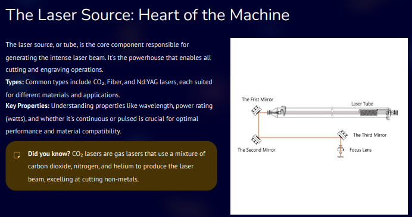
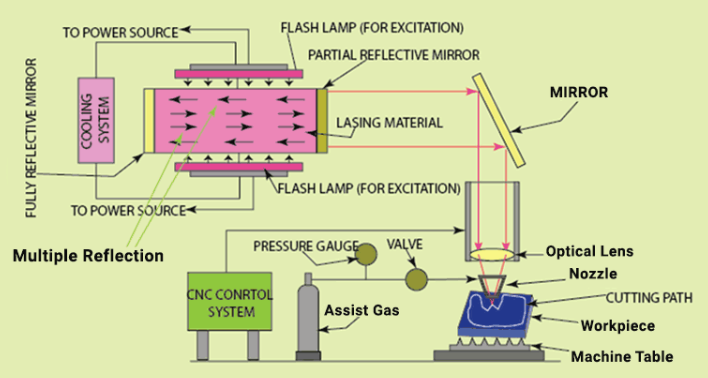

Day 05 – Advanced Parametric Design
Introduction to Laser Cutting
Laser cutting is a digital fabrication process that uses a highly focused laser beam to cut, engrave, or etch materials with very high precision.
The laser melts, burns, or vaporizes material along a programmed path derived from a digital design file.
Laser cutting is widely used because it offers:
- High precision and repeatability
- Clean edges with minimal post-processing
- Compatibility with many materials such as wood, plastics, and thin metals
1. Hardware Components
The laser cutting machine consists of several critical hardware and interface elements that ensure safe and accurate operation.
Safety and Control Components
-
Red Mushroom-Head Button (Top Left)
This is the Emergency Stop (E-STOP) button. When pressed, it immediately cuts power to hazardous machine elements to prevent injury.
It is a latching type and must be manually reset by twisting or pulling after the emergency is resolved. -
Safety Interlock and Key Switch
The key switch is part of the safety interlock system.
It ensures the machine cannot operate unless required safety conditions are met, such as a protective door being closed.
The key also prevents unauthorized operation. -
Black Knobs or Buttons (Center Top)
These are used for specific machine operations, such as: - Motor speed control
- Feed rate adjustment
-
Switching between manual and automatic modes
-
Touch Screen Interface
This is the primary human-machine interface used to: - Load programs
- Monitor machine status
- Control laser operations
Screen Interface Elements
The screen interface provides real-time operational control and feedback.
-
Pause and Stop Buttons (On Screen)
These buttons allow controlled stopping of the machine during normal operation.
Unlike the physical E-STOP, they stop the process gracefully. -
Time and Parameter Display
Indicators such as 00:00:48 and 2.6 typically show: - Elapsed job time
-
Software version or machine parameter values
-
Central Graphic and New Project Option
The graphic represents the machine’s operational state or laser path visualization.
The New Project option allows starting or loading a new job. -
On-Screen E-STOP
A software-based emergency stop that mirrors the function of the physical E-STOP through control logic. -
Status Indicators
Icons and text such as WB 172.17.26.21 and WiFi Connected indicate: - Network connectivity
- Machine IP address on the local network
2. Heart of the Machine
The most critical component of a laser cutter is the laser source, which generates the high-energy beam required for cutting and engraving.

Figure 1: Laser source, the heart of the laser cutting machine.
3. Laser Cutting System
A laser cutting system works by focusing a high-energy laser beam onto the surface of a material to cut, engrave, or mark it.
The general working principle includes:
- The laser source generates a coherent and intense beam of light
- The beam is guided using mirrors and focused through a lens
- When the focused beam hits the material, it melts, burns, or vaporizes it
- An assist gas such as air, oxygen, or nitrogen removes molten material
- The motion system moves the laser head or workpiece along the programmed path
Main Parts of a Laser Cutter
a) Laser Source
- Generates the laser beam
- Common types include:
- CO₂ laser
- Fiber laser
- Diode laser
- Determines cutting power and material compatibility
b) Power Supply
- Provides electrical energy to excite the laser medium
c) Mirrors
- Direct the laser beam from the source to the cutting head
- Ensure accurate beam alignment
d) Focusing Lens
- Concentrates the laser beam into a very small spot
- Higher focus results in higher energy density and precise cutting
e) Cutting Head or Nozzle
- Houses the focusing lens
- Directs assist gas onto the cutting area
f) Assist Gas System
- Uses air, oxygen, or nitrogen
- Removes molten material and improves cut quality
g) Motion Control System
- Includes motors, rails, belts, or lead screws
- Moves the laser head or work bed in X–Y and sometimes Z directions
h) Work Bed
- Supports the material being cut
- Often honeycomb or slatted to reduce reflections
i) Control System
- Includes controller and software
- Converts CAD designs into machine instructions
- Controls speed, laser power, and cutting paths
Laser Cutting Operations
Laser cutters can perform multiple operations depending on power and settings.
Cutting
- Laser completely penetrates the material
- Used for parts, shapes, and profiles
Engraving
- Laser removes only the surface layer
- Used for text, logos, and decorative patterns
Marking
- Laser changes surface color without removing material
- Used for labeling and identification

Figure 2: Complete laser cutting system and working principle.